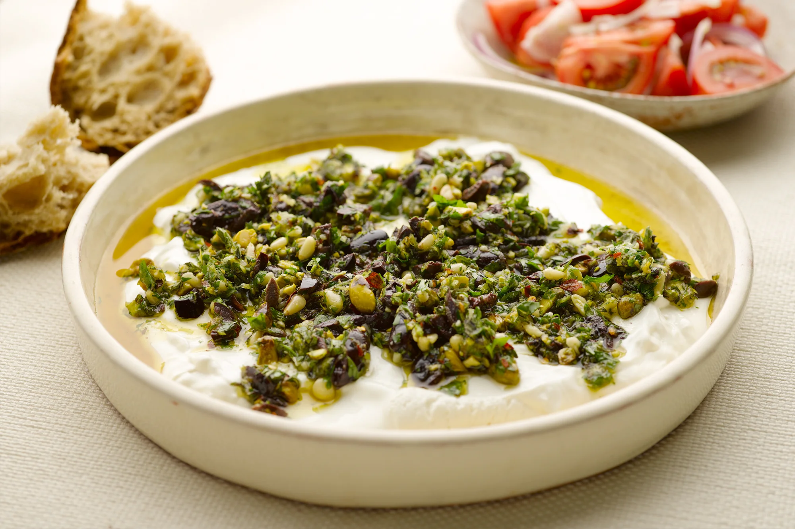
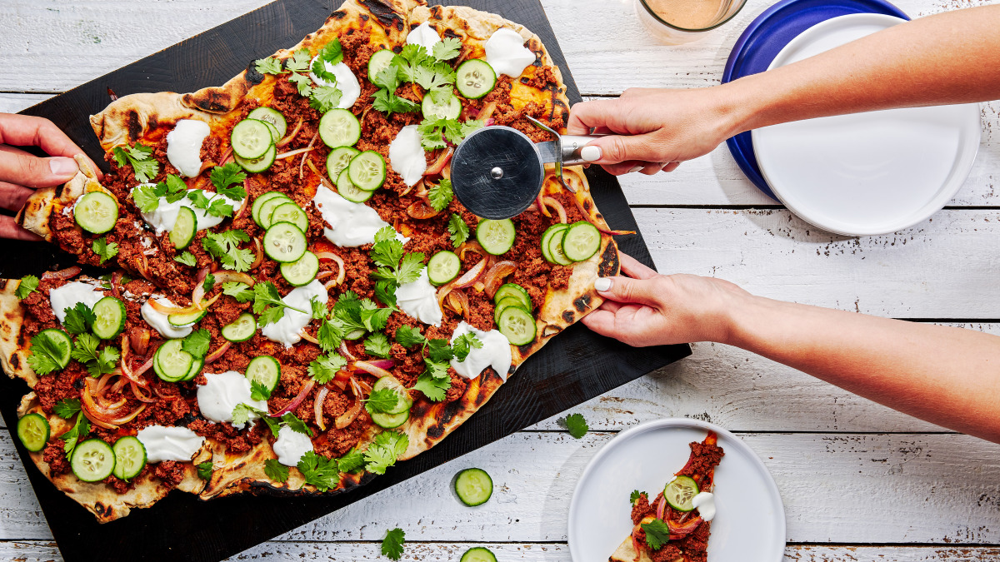

A must-make Summer Barbecue
These simple recipes take full advantage of the warm summer weather (and summer ingredients). So make what you're craving for just one friend or the whole neighborhood — because with these menus you'll be the most popular party-thrower on the block.
Pistachio Mint Labneh Dip
Tart and refreshing, this dip is the perfect complement to anything spicy. It's also ideal for slathering on bread. But, let's be real, we'll be eating it with a spoon.
Spicy Beef Flatbread With Yogurt & Cucumbers
Balance in a bite. Cinnamon-spiced ground beef, crisp cucumbers and yogurt make this dish more crave-worthy than a sidewalk slice.